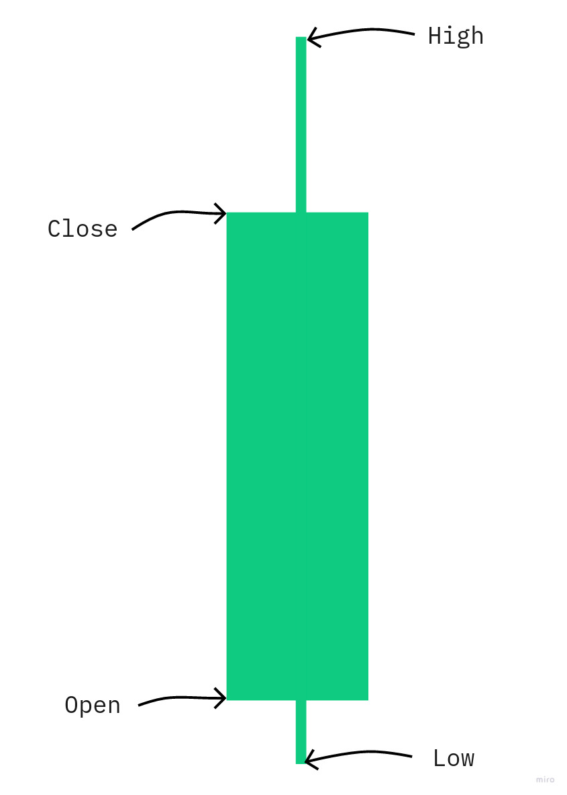
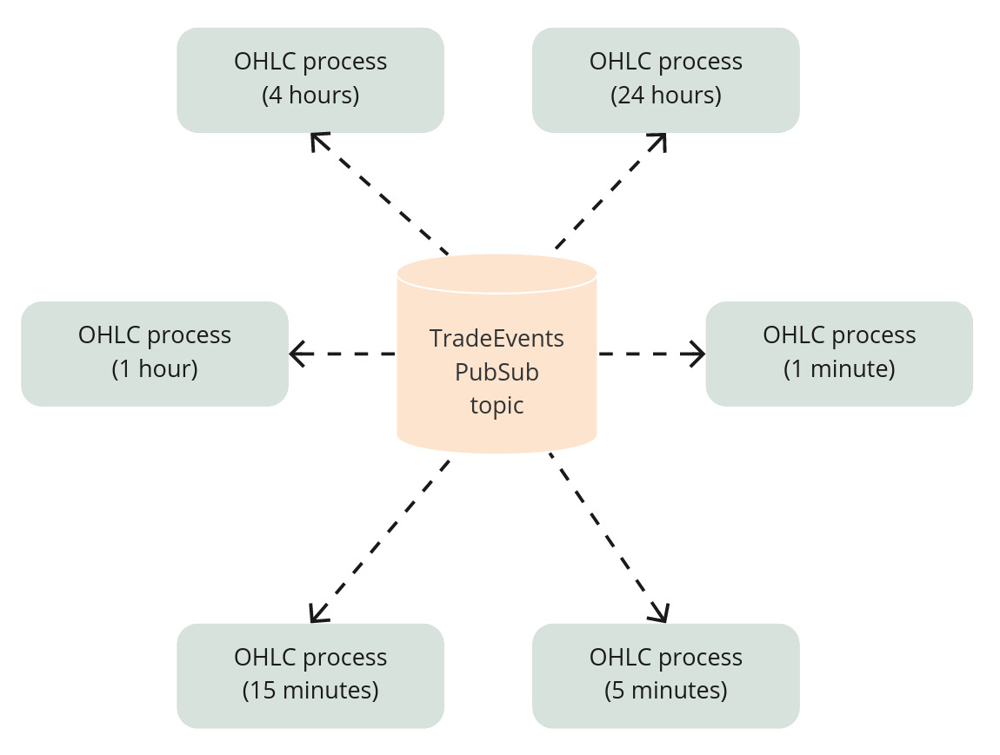

Before closing this side panel, please consider supporting the project by purchasing a PDF/EPUB version
GumroadFollow me on:
Chapter 19 Idiomatic OTP
19.1 Objectives
- the concept
- initial implementation
- idiomatic solution
19.2 The concept
In this chapter, we will look into building an OHLC(open-high-low-close) indicator. We will discuss different potential implementations, which will give us an excellent example to understand the idiomatic usage of the OTP framework.
The OHLC indicator consists of four prices that could be used to draw a candle on the chart:

The OHLC indicators get created by collecting the first price (the “open” price), lowest price(the “low” price), highest price(the “high” price) and the last price(the “close” price) within a specific timeframe like 1 minute. Our code will need to be able to generate those for multiple timeframes at once - 1m, 5m, 15m, 1h, 4h and 24h.
19.3 Initial implementation
What we could do is to have multiple GenServer processes subscribed to the trade events topic in the PubSub where each one would update their own OHLC numbers:

Let’s start by creating a new application inside our umbrella called “indicators”(run below inside terminal):
$ cd apps
$ mix new indicator --supWe can now create a new directory called “ohlc” inside the “/apps/indicator/lib/indicator” directory, where we will create the GenServer “worker.ex” file:
# /apps/indicator/lib/indicator/ohlc/worker.ex
defmodule Indicator.Ohlc.Worker do
use GenServer
def start_link(symbol, duration) do
GenServer.start_link(__MODULE__, {symbol, duration})
end
def init({symbol, duration}) do
{:ok, {symbol, duration}}
end
endAs each worker will need to subscribe to the PubSub’s "TRADE_EVENTS:#{symbol}" topic, we can update the init/1 function to do that:
# /apps/indicator/lib/indicator/ohlc/worker.ex
# add those at the top of the worker module
require Logger
@logger Application.get_env(:core, :logger)
@pubsub_client Application.get_env(:core, :pubsub_client)
...
# updated `init/1` function
def init({symbol, duration}) do
symbol = String.upcase(symbol)
@logger.info("Initializing a new OHLC worker(#{duration} minutes) for #{symbol}")
@pubsub_client.subscribe(
Core.PubSub,
"TRADE_EVENTS:#{symbol}"
)
{:ok, {symbol, duration}}
endFollowing the pattern established by the Naive.Trader, we use the module’s attributes(with values based on config) instead of hardcoded module names.
As we subscribed to the PubSub, we need to provide a callback that will handle the incoming trade events:
# /apps/indicator/lib/indicator/ohlc/worker.ex
# add this at the top
alias Core.Struct.TradeEvent
def handle_info(%TradeEvent{} = trade_event, ohlc) do
{:noreply, Indicator.Ohlc.process(ohlc, trade_event)}
endTo avoid mixing our business logic with the GenServer boilerplate(as discussed in the last chapter), we will place it in a new module. First, we need to create a new file /apps/indicator/lib/indicator/ohlc.ex and the Indicator.Ohlc module inside it:
# /apps/indicator/lib/indicator/ohlc.ex
defmodule Indicator.Ohlc do
endThe Indicator.Ohlc module will define a struct that the Indicator.Ohlc.Worker will use as a state:
# /apps/indicator/lib/indicator/ohlc.ex
@enforce_keys [
:symbol,
:start_time,
:duration
]
defstruct [
:symbol,
:start_time,
:duration,
:open,
:high,
:low,
:close
]Most of the above are self-descriptive, besides the start_time(a Unix timestamp) and the duration(the timeframe in minutes).
We can now progress to the implementation of the process/2 function. As we discussed in the last chapter, we will try to maximize the amount of pure code. First, we will focus on merging the trade event’s data with the current OHLC data. Two things can happen, either:
trade event’s trade_time is within the current OHLC timeframe. Trade event’s price will get merged to the current OHLC
trade event’s trade_time is outside the current OHLC timeframe. The current OHLC will be returned together with a new OHLC based on the trade event’s price
Here’s the implementation:
# /apps/indicator/lib/indicator/ohlc.ex
def merge_price(%__MODULE__{} = ohlc, price, trade_time) do
if within_current_timeframe(ohlc.start_time, ohlc.duration, trade_time) do
{nil, %{ohlc | low: min(ohlc.low, price), high: max(ohlc.high, price), close: price}}
else
{ohlc, generate_ohlc(ohlc.symbol, ohlc.duration, price, trade_time)}
end
endtogether with the within_current_timeframe/3 function:
# /apps/indicator/lib/indicator/ohlc.ex
def within_current_timeframe(start_time, duration, trade_time) do
end_time = start_time + duration * 60
trade_time = div(trade_time, 1000)
start_time <= trade_time && trade_time < end_time
endBesides merging the incoming price into OHLC struct, we need to also deal with the initial state of the worker(the {symbol, duration} tuple). Let’s add a process/2 function with two clauses handling each of those cases:
# /apps/indicator/lib/indicator/ohlc.ex
def process(%__MODULE__{} = ohlc, %TradeEvent{} = trade_event) do
{old_ohlc, new_ohlc} = merge_price(ohlc, trade_event.price, trade_event.trade_time)
maybe_broadcast(old_ohlc)
new_ohlc
end
def process({symbol, duration}, %TradeEvent{} = trade_event) do
generate_ohlc(symbol, duration, trade_event.price, trade_event.trade_time)
endThe second clause takes care of the initial state of the OHLC worker(happens upon receiving the first trade event - once in the lifetime of the worker process).
The first clause handles all the other trade events.
This order of clauses could appear weird, but it makes a lot of sense as Elixir will try pattern match clauses from the top, and in our case, the first(top) clause will be used for almost all of the calls.
Inside the second clause, we used an additional helper that will fill the OHLC struct based on trade event’s price and trade_time:
# /apps/indicator/lib/indicator/ohlc.ex
def generate_ohlc(symbol, duration, price, trade_time) do
start_time = div(div(div(trade_time, 1000), 60), duration) * duration * 60
%__MODULE__{
symbol: symbol,
start_time: start_time,
duration: duration,
open: price,
high: price,
low: price,
close: price
}
end19.3.1 Maybe functions
Let’s get back to the first clause of the process/2 function as it uses another Elixir/Erlang pattern that we didn’t discuss before - the maybe_do_x functions.
In case of the incoming trade event’s trade_time is outside of the current OHLC’s timeframe, we would like to broadcast the current OHLC and return the new OHLC(based on the trade event’s data). Otherwise(trade event’s trade_time within the current OHLC), the trade event’s price is merged into the current OHLC, and it’s not broadcasted.
This sounds very similar to the if-else, but it’s most of the time achieved using the pattern matching:
# /apps/indicator/lib/indicator/ohlc.ex
# add below lines at the top of the module
require Logger
@pubsub_client Application.get_env(:core, :pubsub_client)
defp maybe_broadcast(nil), do: :ok
defp maybe_broadcast(%__MODULE__{} = ohlc) do
Logger.debug("Broadcasting OHLC: #{inspect(ohlc)}")
@pubsub_client.broadcast(
Core.PubSub,
"OHLC:#{ohlc.symbol}",
ohlc
)
endBy using a separate function, we avoided branching using if-else inside the process/2 function. The idea is not necessarily to avoid if statements but to keep the code at the consistent level of abstraction, so it’s easier to understand. Inside the process/2 function, we can understand what’s going on just by reading the function names inside - there’s no “logic”.
Sometimes people advise that “code should be like well written prose” and maybe_do_x functions are one of the ways to achieve this “nirvana” state.
19.3.2 Testing
At this moment, our code should compile, and we should already be able to test it. First, let’s change the logging level to debug inside config/config.exs to see what OHLC structs got broadcasted:
# /config/config.exs
config :logger,
level: :debug # <= updatedWe can now progress with testing:
$ iex -S mix
iex(1)> Streamer.start_streaming("XRPUSDT")
...
iex(2)> Indicator.Ohlc.Worker.start_link({"XRPUSDT", 1})
{:ok, #PID<0.447.0>}
...
22:45:00.335 [debug] Broadcasting OHLC: %Indicator.Ohlc{close: "0.63880000", duration: 1, high: "0.63890000", low: "0.63840000", open: "0.63860000", start_time: 1644014640, symbol: "XRPUSDT"}The above test confirms that we can manually start a single OHLC worker that will aggregate data over a single minute timeframe. We need to update the supervision tree to start a dynamic supervisor:
# /apps/indicator/lib/indicator/application.ex
children = [
{DynamicSupervisor, name: Indicator.DynamicSupervisor}
]We can now add aggregate_ohlcs/1 function that will start all workers:
# /apps/indicator/lib/indicator.ex
def aggregate_ohlcs(symbol) do
[1, 5, 15, 60, 4 * 60, 24 * 60]
|> Enum.each(
&DynamicSupervisor.start_child(
Indicator.DynamicSupervisor,
{Indicator.Ohlc.Worker, {symbol, &1}}
)
)
endWe can now start the aggregation just by running the following:
$ iex -S mix
iex(1)> Streamer.start_streaming("XRPUSDT")
...
iex(2)> Indicator.aggregate_ohlcs("XRPUSDT")
{:ok, #PID<0.447.0>}The above will start six OHLC worker processes supervised under the Indicator.DynamicSupervisor process.
We could continue with this exercise, add a Registry to be able to stop the indicators and a database to be able to autostart them. Those improvements would get the “indicators” application in line with the other applications, but that’s not the goal of this chapter.
19.4 Idiomatic solution
What we will focus on is the usage of processes(in our case GenServers) in our solution. We’ve split our logic between multiple processes, each aggregating a single timeframe. All of those processes work in the same way. They subscribe to the PubSub topic, merge the incoming data into OHLC structs, and potentially broadcast them. The only difference is the timeframe that they use for merging data.
The solution feels very clean, but also we are using multiple processes to aggregate data for each symbol. In a situation like this, we should always ask ourselves: - do we need that many processes? - are we using them to achieve parallelism? Is it required? - could we reorganize our code to use fewer processes?
The main idea is to keep our code as simple as possible and only use processes when it’s absolutely required.
Instead of a single worker being responsible for aggregation within a single timeframe, we could restructure our code to make it responsible for all timeframes of the symbol.
This improvement would:
- make our merging code a little bit complex(now it would merge multiple timeframes at once)
- decrease the amount of PubSub subscribers by six (instead of six processes per symbol now we would have just one)
- potentially decrease the amount of broadcasted messages (we could group OHLC structs into a single message)
- in case we would want to have all of the timeframes generated for a symbol or none(in case of error), we would probably end up with an additional supervision(one_for_all) level that would be started for each of the symbols - this is not a concern anymore
- we will be unable to aggregate nor broadcast in parallel(as we are now dealing with one process)
We can see that things can get really complex really quick. Processes are a really powerful tool, and it’s the responsibility lays on us developers to use them wisely - they must not be used for code organization.
Enough theory - let’s look into how we could update our Indicator.Ohlc module to be able to deal with multiple timeframes at once.
Initially, we could be tempted to update the process/2 function:
# /apps/indicator/lib/indicator.ex
def process([_ | _] = ohlcs, %TradeEvent{} = trade_event) do
results =
ohlcs
|> Enum.map(&merge_price(&1, trade_event.price, trade_event.trade_time))
results |> Enum.map(&maybe_broadcast(elem(&1, 0)))
results |> Enum.map(&elem(&1, 1))
end
def process(symbol, %TradeEvent{} = trade_event) do
[1, 5, 15, 60, 4 * 60, 24 * 60]
|> Enum.map(
&generate_ohlc(
symbol,
&1,
trade_event.price,
trade_event.trade_time
)
)
endWe added some logic to both clauses. At this moment, it maybe doesn’t look that bad, but it’s a great place to mix even more logic with dirty code. This is a great example where we should stop and rethink how we could maximize the amount of pure code.
We use the merge_price/3 and generate_ohlc/4 functions, which deal with a single OHLC data. We could add plural versions of those functions that will understand that we now deal with multiple OHLC structs:
# /apps/indicator/lib/indicator.ex
def merge_prices(ohlcs, price, trade_time) do
results = ohlcs
|> Enum.map(&merge_price(&1, price, trade_time))
{
results |> Enum.map(&elem(&1, 0)) |> Enum.filter(&(&1)),
results |> Enum.map(&elem(&1, 1))
}
end
def generate_ohlcs(symbol, price, trade_time) do
[1, 5, 15, 60, 4 * 60, 24 * 60]
|> Enum.map(
&generate_ohlc(
symbol,
&1,
price,
trade_time
)
)
endNow the process/2 function got back to its almost original shape:
def process([_ | _] = ohlcs, %TradeEvent{} = trade_event) do
{old_ohlcs, new_ohlcs} = merge_prices(ohlcs, trade_event.price, trade_event.trade_time)
old_ohlcs |> Enum.map(&maybe_broadcast/1)
new_ohlcs
end
def process(symbol, %TradeEvent{} = trade_event) do
generate_ohlcs(symbol, trade_event.price, trade_event.trade_time)
endBy introducing the merge_prices/3 and generate_ohlcs/3 functions, we were able to keep the dirty part of our code small(it grew only to accommodate multiple broadcasts). The new functions are pure and can be easily tested.
As we modified the interface of the process/2 function (by removing the duration), we need to update the Indicator.Ohlc.Worker module to be blissfully not aware that we have different durations:
# /apps/indicator/lib/indicator/ohlc/worker.ex
def start_link(symbol) do # <= duration removed
GenServer.start_link(__MODULE__, symbol) # <= duration removed
end
def init(symbol) do # <= duration removed
symbol = String.upcase(symbol)
@logger.debug("Initializing new a OHLC worker for #{symbol}") # <= duration skipped
...
{:ok, symbol} # <= duration removed
endThe final update will be to simplify the Indicator.aggregate_ohlcs/1 function just to start a single OHLC worker:
# /apps/indicator/lib/indicator.ex
def aggregate_ohlcs(symbol) do
DynamicSupervisor.start_child(
Indicator.DynamicSupervisor,
{Indicator.Ohlc.Worker, symbol}
)
endWe can now test our implementation by enabling the debug logging and running:
$ iex -S mix
iex(1)> Streamer.start_streaming("XRPUSDT")
...
iex(2)> Streamer.start_streaming("XRPUSDT")
...
23:23:00.416 [info] Broadcasting OHLC: %Indicator.Ohlc{close: "0.68230000", duration: 1, high: "0.68330000", low: "0.68130000", open: "0.68160000", start_time: 1644189720, symbol: "XRPUSDT"}The logged message(s) confirms that our OHLC aggregator logic works as expected using a single process.
In the case of the OHLC aggregator, we’ve seen that there’s some trade-off between running multiple processes(simpler code) vs single process(more complex merging) - it could be unclear what’s the benefit of limiting the usage of processes(especially that they are “almost free”).
I totally understand. Please treat this chapter as an introduction to the idiomatic Elixir. In the next chapter, we will apply this concept when refactoring the Naive trading strategy to see its practical benefits.
[Note] Please remember to run the mix format to keep things nice and tidy.
Source code for this chapter can be found at Github